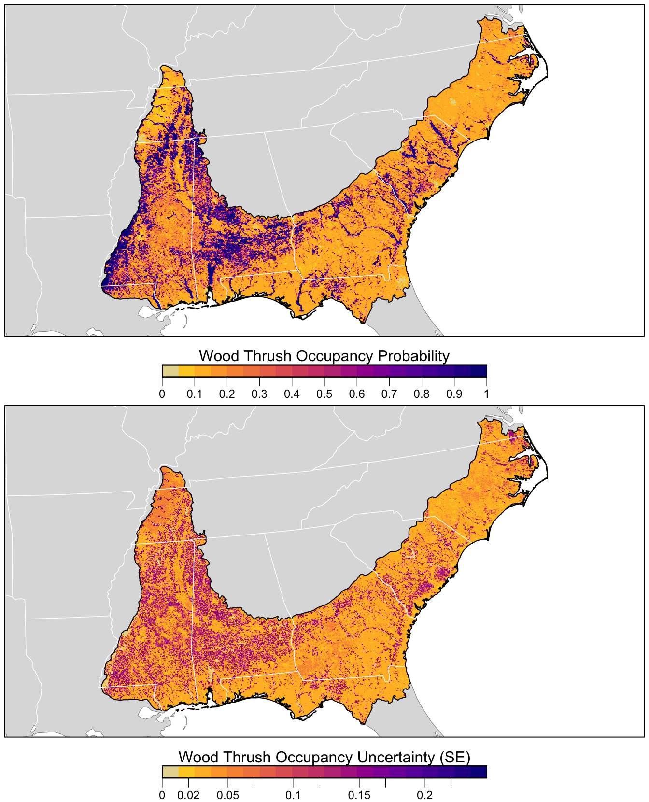

Chapter 5 Modeling Occupancy
5.1 Introduction
In this chapter, we’ll cover the basic steps for applying occupancy models to eBird data. In Chapter 4, we used analytical approaches that accounted for variation in detectability by including covariates that are known to influence detection rates (e.g. effort) that are incorporated into the model simultaneously with the covariates that influence occurrence. In contrast, occupancy models jointly model the ecological process of species occurrence and the observation process of species detection as parallel models. The application of these models typically requires data from repeated sampling visits (occasions) to a single site during a time frame over which the population can be considered closed to the appearance or disappearance of birds. Although the majority of eBird checklists do not meet these requirements, it is possible to apply occupancy models to eBird data by extracting a subset of the data that do conform to a repeat-sampling data structure. Here, we present a simple example of how to process eBird data to meet the assumptions of occupancy models. To illustrate our example, we apply a single-season occupancy model to estimate occupancy and detection probabilities for Wood Thrush in the month of June for BCR 27. This chapter differs from the previous chapter on modeling encounter rate in two important ways. First, the random forest model used in Chapter 4 is an example of a machine learning approach, while the occupancy models used in this chapter use a more traditional likelihood approach. This latter class of statistical models are widely used for addressing specific questions and hypotheses, while the goal of machine learning is primarily to identify patterns and make predictions (Bzdok, Altman, and Krzywinski 2018). Second, machine learning approaches can accommodate complex non-linear effects and interactions between covariates, and are useful when modeling habitat associations that can vary across large spatial and temporal scales. In contrast, occupancy models are well suited for describing linear effects and simpler interactions. In this example, we specifically focus on the mechanics of filtering and formatting the data to fit occupancy models, and less on the specifics of model selection and how to choose suitable predictor variables for estimating detection and occupancy probabilities. The predictors we do include are informed by our inferences on variable importance scores from the random forest model in Chapter 4, as well as our existing knowledge of the species being modeled.
If you worked through the previous chapters, you should have all the data necessary for this chapter. You can also download the data package, and unzip it to your project directory.
library(auk)
library(lubridate)
library(sf)
library(dggridR)
library(unmarked)
library(raster)
library(ebirdst)
library(MuMIn)
library(AICcmodavg)
library(fields)
library(tidyverse)
# resolve namespace conflicts
select <- dplyr::select
projection <- raster::projection
# set random number seed to insure fully repeatable results
set.seed(1)
# setup output directory for saved results
if (!dir.exists("output")) {
dir.create("output")
}
# ebird data
ebird <- read_csv("data/ebd_woothr_june_bcr27_zf.csv") %>%
mutate(year = year(observation_date),
# occupancy modeling requires an integer response
species_observed = as.integer(species_observed))
# modis land cover covariates
habitat <- read_csv("data/pland-elev_location-year.csv") %>%
mutate(year = as.integer(year))
# combine ebird and modis data
ebird_habitat <- inner_join(ebird, habitat, by = c("locality_id", "year"))
# prediction surface
pred_surface <- read_csv("data/pland-elev_prediction-surface.csv")
# latest year of landcover data
max_lc_year <- pred_surface$year[1]
r <- raster("data/prediction-surface.tif")
# load gis data for making maps
map_proj <- st_crs(102003)
ne_land <- read_sf("data/gis-data.gpkg", "ne_land") %>%
st_transform(crs = map_proj) %>%
st_geometry()
bcr <- read_sf("data/gis-data.gpkg", "bcr") %>%
st_transform(crs = map_proj) %>%
st_geometry()
ne_country_lines <- read_sf("data/gis-data.gpkg", "ne_country_lines") %>%
st_transform(crs = map_proj) %>%
st_geometry()
ne_state_lines <- read_sf("data/gis-data.gpkg", "ne_state_lines") %>%
st_transform(crs = map_proj) %>%
st_geometry()5.2 Data preparation
First, we need to extract a subset of the eBird data that meets the assumptions of occupancy models, then perform spatiotemporal subsampling to deal with specific sources of bias in the data. Let’s start by filtering our data to include only checklists with 5 or fewer observers, to reduce sources of variation in detectability, and because there are very few checklists with more than 5 observers. In addition, we’ll subset observations to the most recent year for which we have data (2019) to fit a single-season occupancy model.
# filter prior to creating occupancy model data
ebird_filtered <- filter(ebird_habitat,
number_observers <= 5,
year == max(year))In some situations, you may want to further filter the data based on the results of an exploratory analysis similar to the one conducted in Section 2.5. However, for the purpose of comparing results among different modeling approaches and best practices, we won’t further filter the observations in eBird for our occupancy example. In addition, given the extra constraints for data suitable for occupancy modeling, it may be useful to retain more checklists at this stage.
5.2.1 Data formatting
Next, we need to generate detection histories for each location we define as a site. In this example, we define the month of June as the time period over which we assume that the population is closed for Wood Thrush in BCR 27, and a site is defined as a specific location (latitude/longitude) that is visited at least twice by the same observer within our defined period of closure (i.e. the month of June).
The auk function filter_repeat_visits() is designed to extract a subset of eBird data suitable for occupancy modeling. We first filter the data to only sites that have at least 2 visits (min_obs). We then define the maximum length of our detection history (max_obs) as 10 visits or checklists. When a specific site has been visited more than 10 times, the function will randomly select 10 checklists from the total number of visits. Since we only have data from June, using annual_closure = TRUE defines the temporal period of closure as the entire length of the primary sampling period (e.g. month of June of the same year). Alternatively, the periods of closure can be defined in terms of the number of contiguous days using n_days. For example, n_days = 10 would define contiguous sets of 10 days, starting with the earliest observation date in the data, and use these as consecutive periods of closure. Finally, site_vars specifies the set of variables that defines a site. In this example, a site is defined jointly by the location and observer IDs. Any set of variables in the data can be used to define sites. For example, site_vars = "locality_id" could be used to define sites using the location regardless of observer.
occ <- filter_repeat_visits(ebird_filtered,
min_obs = 2, max_obs = 10,
annual_closure = TRUE,
date_var = "observation_date",
site_vars = c("locality_id", "observer_id"))
# entire data set
nrow(ebird_habitat)
#> [1] 48445
# reduced data set
nrow(occ)
#> [1] 3724
# number of individual sites
n_distinct(occ$site)
#> [1] 988Three new columns are added to the dataset by using the function filter_repeat_visits(): site is a unique site ID, closure_id identifies the primary period of closure (in this example the year), and n_observations is the number of visits to each site. Our capture histories are now properly formatted for occupancy models and ready to be analyzed. Note that we’ve made a trade off in sample size, dropping from 10,414 checklists to 3,724 checklists over 988 sites.
We’ll use our filtered oubservations to fit a single-season occupancy model using the unmarked R package (for additional details on the type of data format required for this package, consult the documentation for the unmarked function formatWide()). The auk function format_unmarked_occu() converts data from a vertical format in which each row is an observation (as in the EBD) to a horizontal detection history required by unmarked, where each row is a site.
At this stage, we need to specify which variables will be ecological process (i.e. occupancy) covariates and which will be observational process (i.e. detection) covariates. Occupancy covariates (site_covs) will be unique at the level of the site, while detection covariates (obs_covs) will be unique for each sampling occasion (i.e. checklist).
For this example, we’ll use MODIS land cover variables as habitat covariates for modeling the occupancy probability of Wood Thrush. Based on predictor importance measures from Chapter 4, we include deciduous broadleaf forest (pland_04) and mixed forest (pland_05) as habitat types for which we expect positive relationships with occupancy, and croplands (pland_12) and urban (pland_13), for which we expect negative relationships.
To estimate detection probability, we include five effort variables that are related to the detection process. We also include deciduous broadleaf forest (pland_04) and mixed forest (pland_05), given that habitat type has been shown to affect detectability. For example, some species are harder to detect in densely forested habitats relative to more open habitat types. Occupancy models allow us to tease apart the differing effects of habitat on both detection and occupancy probabbilities.
# format for unmarked
occ_wide <- format_unmarked_occu(occ,
site_id = "site",
response = "species_observed",
site_covs = c("n_observations",
"latitude", "longitude",
# % deciduous forest
"pland_04",
# % mixed forest
"pland_05",
# % cropland
"pland_12",
# % urban
"pland_13"),
obs_covs = c("time_observations_started",
"duration_minutes",
"effort_distance_km",
"number_observers",
"protocol_type",
"pland_04",
"pland_05"))5.2.2 Spatial subsampling
As discussed in Section 4.3, spatial subsampling of eBird observations reduces spatial bias. We’ll use the same hexagonal subsampling approach as in Chapter 4; however, here we’ll subsample at the level of sites rather than observations. For this example, we will sample one site per 5 km grid cell.
# generate hexagonal grid with ~ 5 km betweeen cells
dggs <- dgconstruct(spacing = 5)
# get hexagonal cell id for each site
occ_wide_cell <- occ_wide %>%
mutate(cell = dgGEO_to_SEQNUM(dggs, longitude, latitude)$seqnum)
# sample one site per grid cell
occ_ss <- occ_wide_cell %>%
group_by(cell) %>%
sample_n(size = 1) %>%
ungroup() %>%
select(-cell)
# calculate the percent decrease in the number of sites
1 - nrow(occ_ss) / nrow(occ_wide)This resulted in a 41% decrease in the number of sites.
5.2.3 unmarked object
Finally, we’ll convert this data frame of observations into an unmarked object so we can start fitting occupancy models.
occ_um <- formatWide(occ_ss, type = "unmarkedFrameOccu")
summary(occ_um)
#> unmarkedFrame Object
#>
#> 584 sites
#> Maximum number of observations per site: 10
#> Mean number of observations per site: 3.86
#> Sites with at least one detection: 64
#>
#> Tabulation of y observations:
#> 0 1 <NA>
#> 2125 128 3587
#>
#> Site-level covariates:
#> n_observations latitude longitude pland_04 pland_05 pland_12 pland_13
#> Min. : 2.00 Min. :29.7 Min. :-91.4 Min. :0.000 Min. :0.000 Min. :0.000 Min. :0.000
#> 1st Qu.: 2.00 1st Qu.:31.2 1st Qu.:-85.6 1st Qu.:0.000 1st Qu.:0.000 1st Qu.:0.000 1st Qu.:0.000
#> Median : 2.00 Median :33.1 Median :-81.4 Median :0.000 Median :0.000 Median :0.000 Median :0.000
#> Mean : 3.86 Mean :33.2 Mean :-82.0 Mean :0.052 Mean :0.047 Mean :0.025 Mean :0.159
#> 3rd Qu.: 5.00 3rd Qu.:35.1 3rd Qu.:-78.3 3rd Qu.:0.000 3rd Qu.:0.000 3rd Qu.:0.000 3rd Qu.:0.203
#> Max. :10.00 Max. :37.4 Max. :-75.5 Max. :1.000 Max. :1.000 Max. :1.000 Max. :1.000
#>
#> Observation-level covariates:
#> time_observations_started duration_minutes effort_distance_km number_observers protocol_type
#> Min. : 0 Min. : 1 Min. :0 Min. :1 Length:5840
#> 1st Qu.: 8 1st Qu.: 16 1st Qu.:0 1st Qu.:1 Class :character
#> Median :10 Median : 35 Median :0 Median :1 Mode :character
#> Mean :12 Mean : 53 Mean :1 Mean :1
#> 3rd Qu.:16 3rd Qu.: 70 3rd Qu.:1 3rd Qu.:1
#> Max. :24 Max. :300 Max. :5 Max. :4
#> NA's :3587 NA's :3587 NA's :3587 NA's :3587
#> pland_04 pland_05
#> Min. :0 Min. :0
#> 1st Qu.:0 1st Qu.:0
#> Median :0 Median :0
#> Mean :0 Mean :0
#> 3rd Qu.:0 3rd Qu.:0
#> Max. :1 Max. :1
#> NA's :3587 NA's :35875.3 Occupancy modeling
Now that we’ve created a data frame with detection histories and covariates, we can use unmarked to fit a single-season occupancy model. In this book, we won’t delve into the mechanics of occupancy models; however, there is a wealth of background literature on occupancy modeling and readers wishing to learn more about this field may want to consult the book on the topic by MacKenzie et al. (2017). Here, we simply fit a single-season occupancy model to our data using the occu() function, specifying the detection and occupancy covariates, respectively, via a double right-hand sided formula of the form ~ detection covariates ~ occupancy covariates.
# fit model
occ_model <- occu(~ time_observations_started +
duration_minutes +
effort_distance_km +
number_observers +
protocol_type +
pland_04 + pland_05
~ pland_04 + pland_05 + pland_12 + pland_13,
data = occ_um)
# look at the regression coefficients from the model
summary(occ_model)
#>
#> Call:
#> occu(formula = ~time_observations_started + duration_minutes +
#> effort_distance_km + number_observers + protocol_type + pland_04 +
#> pland_05 ~ pland_04 + pland_05 + pland_12 + pland_13, data = occ_um)
#>
#> Occupancy (logit-scale):
#> Estimate SE z P(>|z|)
#> (Intercept) -2.030 0.231 -8.773 1.74e-18
#> pland_04 6.742 1.958 3.442 5.77e-04
#> pland_05 0.889 0.789 1.126 2.60e-01
#> pland_12 -1.116 1.906 -0.586 5.58e-01
#> pland_13 -2.011 0.968 -2.078 3.77e-02
#>
#> Detection (logit-scale):
#> Estimate SE z P(>|z|)
#> (Intercept) -1.24620 0.56367 -2.211 0.02704
#> time_observations_started -0.00505 0.02993 -0.169 0.86592
#> duration_minutes 0.00650 0.00317 2.053 0.04005
#> effort_distance_km -0.25544 0.13388 -1.908 0.05639
#> number_observers 0.16704 0.30811 0.542 0.58773
#> protocol_typeTraveling 0.84136 0.38631 2.178 0.02941
#> pland_04 -0.77822 0.53981 -1.442 0.14940
#> pland_05 2.87185 1.00784 2.849 0.00438
#>
#> AIC: 691
#> Number of sites: 584
#> optim convergence code: 0
#> optim iterations: 67
#> Bootstrap iterations: 05.3.1 Assessment
Although few goodness-of-fit tests exist for occupancy models, we demonstrate how to perform the MacKenzie and Bailey (2004) goodness-of-fit test. This approach calculates a Pearson’s chi-square fit statistic from the observed and expected frequencies of detection histories for a given model. For this example, we use the mb.gof.test() test function in the AICcmodavg package, which can handle occupancy models produced by the occu() function in unmarked. Note that to produce accurate results, this process requires simulating a large number of bootstrap samples, which can take a long time to run. To keep the execution times reasonable, we set nsim = 10 to simulate 10 samples for this example; however, when running this under regular circumstances, you should increase this to a much higer number of simulations, depending on your data (e.g., nsim = 1000).
occ_gof <- mb.gof.test(occ_model, nsim = 10, plot.hist = FALSE)
# hide the chisq table to give simpler output
occ_gof$chisq.table <- NULL
print(occ_gof)#>
#> MacKenzie and Bailey goodness-of-fit for single-season occupancy model
#>
#> Chi-square statistic = 1772
#> Number of bootstrap samples = 1000
#> P-value = 0.476
#>
#> Quantiles of bootstrapped statistics:
#> 0% 25% 50% 75% 100%
#> 382 1318 1716 2270 15196
#>
#> Estimate of c-hat = 0.9For this example, the probability of getting the calculated chi-square statistic under a null sampling distribution is indicated by the p-value of 0.476, indicating that there is no reason to consider a lack of fit (p > 0.1). We also get an estimate of the overdispersion parameter (c-hat) for the model, which is derived by dividing the observed chi-square statistic by the mean of the statistics obtained from simulation. In this example, c-hat = 0.9, which is very close to c-hat = 1, indicating that the variance is not greater than the mean, and that there is no evidence for overdispersion. Again, under regular circumstances we would want to run many more simulations, but based on this smaller run, the test statistics suggest that there is no evidence of lack of fit of this model to these data. For more details on this test, see MacKenzie and Bailey (2004).
5.3.2 Model selection
So far, we have a single global model that includes all of the covariates we believe will influence the occupancy and detection probabilities. In general, we suggest that careful consideration be used when choosing the set of candidate models to be run and compared during model selection. In this example, we will use the dredge() function to generate a set of candidate models using different combinations of the parameters and covariates in the global model. Since we know from prior experience that the effort covariates are almost always important, we’ll lock these variables in, and consider a candidate set consisting of all possible combinations of the ecological covariates in the occupancy submodel.
# get list of all possible terms, then subset to those we want to keep
det_terms <- getAllTerms(occ_model) %>%
# retain the detection submodel covariates
discard(str_detect, pattern = "psi")
# dredge all possibe combinations of the occupancy covariates
occ_dredge <- dredge(occ_model, fixed = det_terms)
# model comparison
select(occ_dredge, starts_with("psi(p"), df, AICc, delta, weight) %>%
mutate_all(~ round(., 3)) %>%
knitr::kable()| psi(pland_04) | psi(pland_05) | psi(pland_12) | psi(pland_13) | df | AICc | delta | weight |
|---|---|---|---|---|---|---|---|
| 7.08 | -2.09 | 11 | 689 | 0.000 | 0.366 | ||
| 6.88 | 0.935 | -1.95 | 12 | 690 | 0.783 | 0.248 | |
| 6.92 | -1.271 | -2.15 | 12 | 690 | 1.543 | 0.169 | |
| 6.74 | 0.889 | -1.116 | -2.01 | 13 | 691 | 2.459 | 0.107 |
| 7.97 | 1.262 | 11 | 693 | 4.335 | 0.042 | ||
| 8.31 | 10 | 693 | 4.578 | 0.037 | |||
| 7.91 | 1.243 | -0.598 | 12 | 695 | 6.301 | 0.016 | |
| 8.23 | -0.759 | 11 | 695 | 6.463 | 0.014 | ||
| -3.06 | 10 | 717 | 28.051 | 0.000 | |||
| -2.271 | -3.14 | 11 | 717 | 28.324 | 0.000 | ||
| 0.961 | -2.89 | 11 | 717 | 28.459 | 0.000 | ||
| 0.883 | -2.098 | -2.98 | 12 | 718 | 29.001 | 0.000 | |
| 1.446 | 10 | 729 | 40.192 | 0.000 | |||
| 1.404 | -1.446 | 11 | 730 | 41.535 | 0.000 | ||
| 9 | 731 | 41.922 | 0.000 | ||||
| -1.649 | 10 | 732 | 43.041 | 0.000 |
The corrected Akaike Information Criterion (AICc) measures the likelihood of each model to have generated the data we observed, adjusted for the number of parameters in the model. Lower values indicate models with a better fit to the data, penalizing for the added number of parameters. Delta is the difference in AICc values between the given model and the model that is most likely to have generated the data (i.e. the one with the lowest AICc), and is a relative measure conditional on the candidate set of models. Finally, the AIC weight is a transformation of delta that can be interpreted as the probability that the given model is the most likely one of the candidate models to have generated the data, and is also conditional on the candidate model set. The columns beginning with psi( give the model coefficients for each of the habitat covariates in the occupancy submodel; missing values indicate that that covariate was not included in the given model.
A quick look at the results of dredging reveals that for the Wood Thrush example there is not a clear single model, or even a small set of models, that are most likely to have generated our data. This is evident from the low AIC weight for the top model and the large number of models with moderate AIC weights. Given this, and the fact that all of our effects are linear and use the same family and link function, we’ll average across all models, weighted by AICc, to produce a model-averaged prediction. However, there may be scenarios in which there is a clear set of high performing models, in which case you can use the get.models() function to extract just these models prior to averaging. For the sake of efficiency, we’ll only average the top models, which we’ll define as those cumulatively comprising 95% of the weights. This will trivially impact the results since the models with lower support have very small weights and therefore contribute little to the weighted-average predictions.
# select models with the most suport for model averaging
occ_dredge_95 <- get.models(occ_dredge, subset = cumsum(weight) <= 0.95)
# average models based on model weights
occ_avg <- model.avg(occ_dredge_95, fit = TRUE)
# model coefficients
t(occ_avg$coefficients)
#> full subset
#> psi(Int) -2.01638 -2.01638
#> psi(pland_04) 6.99654 6.99654
#> psi(pland_13) -1.95991 -2.05220
#> p(Int) -1.26469 -1.26469
#> p(duration_minutes) 0.00654 0.00654
#> p(effort_distance_km) -0.25472 -0.25472
#> p(number_observers) 0.16099 0.16099
#> p(pland_04) -0.77321 -0.77321
#> p(pland_05) 2.98243 2.98243
#> p(protocol_typeTraveling) 0.84620 0.84620
#> p(time_observations_started) -0.00557 -0.00557
#> psi(pland_05) 0.40717 0.95693
#> psi(pland_12) -0.35917 -1.211165.3.3 Exploring detection model submodel
A unique feature of occupancy models, is that we can investigate whether certain covariates influence detection in isolation from any variation in variation in occurrence, which wasn’t possible using the machine learning approach in Chapter 4. Specifically, we have already seen that the habitat covariates influence occupancy, but we can assess how these covariates affect detection conditional on a bird being present and potentially detected. We included deciduous broadleaf forest (pland_04) and mixed forest (pland_05) as detection covariates in the global model, and we can compare a set of models with and without these covariates to assess their importance. Here we’ll demonstrate how to manually define and compare a set of models rather than use the dredge() function as we did in the previous section. Let’s start by defining the candidate model set. To do so, we explicitly define a null detection model with no habitat covariates, then add in additional terms using update.formula().
# define a null detection model
det_mod <- ~ time_observations_started +
duration_minutes +
effort_distance_km +
number_observers +
protocol_type ~
pland_04 + pland_05 + pland_12 + pland_13
# define and fit candidate models
mods <- list(det_mod_null = det_mod,
det_mod_dec = update.formula(det_mod, ~ . + pland_04 ~ .),
det_mod_mix = update.formula(det_mod, ~ . + pland_05 ~ .),
global = update.formula(det_mod,
~ . + pland_04 + pland_05 ~ .)) %>%
map(occu, data = occ_um)Now we can perform model selection on this set to compare the different candidate models.
mod_sel <- fitList(fits = mods) %>%
modSel()
mod_sel
#> nPars AIC delta AICwt cumltvWt
#> global 13 690.60 0.00000 0.478 0.48
#> det_mod_mix 12 690.60 0.00057 0.478 0.96
#> det_mod_dec 12 696.58 5.98599 0.024 0.98
#> det_mod_null 11 696.99 6.39447 0.020 1.00From these results, it’s clear that including these forest habitat covariates–especially deciduous broadleaf forest–leads to a marked improvement in model performance, as observed by the differences in AIC and the AIC weights. Let’s look at the coefficients from the global model for these covariates to see how they’re impacting detection and occupancy.
coef(occ_model) %>%
enframe() %>%
filter(str_detect(name, "pland_0"))
#> # A tibble: 4 x 2
#> name value
#> <chr> <dbl>
#> 1 psi(pland_04) 6.74
#> 2 psi(pland_05) 0.889
#> 3 p(pland_04) -0.778
#> 4 p(pland_05) 2.87The psi() coefficients are from the occupancy submodel and the p() coefficients are from the detection submodel. With this in mind, we see that increasing forest cover increases occupancy probability, since Wood Thrush are forest-associated species, but it decreases detection probability, since birds are harder to see and hear in dense forest. The ability to tease apart the differing effects that covariates have on detection and occupancy is one of the strengths of occupancy modeling.
5.4 Prediction
In this section, we’ll estimate the distribution of Wood Thrush in BCR 27. Similar to Section 3.4, we’ll generate a prediction surface using the PLAND land cover covariates summarized on a regular grid of points across BCR 27. For this, we’ll use the predict() function to estimate occupancy probabilities, standard errors, and confidence intervals. When we use predict() on the output of get.models() it will make predictions for each of the selected models, then average the predictions using the AIC weights to produce the final prediction for each location.
Recall that when we predicted encouter rate, we had to include effort variables in our prediction surface. We don’t need to do that here because the occupancy submodel doesn’t depend on the effort covariates; these only occur in the detection submodel.
occ_pred <- predict(occ_avg,
newdata = as.data.frame(pred_surface),
type = "state")
# add to prediction surface
pred_occ <- bind_cols(pred_surface,
occ_prob = occ_pred$fit,
occ_se = occ_pred$se.fit) %>%
select(latitude, longitude, occ_prob, occ_se)Next, we’ll convert this data frame to spatial features using sf, then rasterize the points using the prediction surface raster template.
r_pred <- pred_occ %>%
# convert to spatial features
st_as_sf(coords = c("longitude", "latitude"), crs = 4326) %>%
st_transform(crs = projection(r)) %>%
# rasterize
rasterize(r)
r_pred <- r_pred[[c("occ_prob", "occ_se")]]
# save the raster
tif_dir <- "output"
if (!dir.exists(tif_dir)) {
dir.create(tif_dir)
}
writeRaster(r_pred[["occ_prob"]],
filename = file.path(tif_dir, "occupancy-model_prob_woothr.tif"),
overwrite = TRUE)
writeRaster(r_pred[["occ_se"]],
filename = file.path(tif_dir, "occupancy-model_se_woothr.tif"),
overwrite = TRUE)Finally, we can map these predictions!
# project predictions
r_pred_proj <- projectRaster(r_pred, crs = map_proj$proj4string, method = "ngb")
par(mfrow = c(2, 1))
for (nm in names(r_pred)) {
r_plot <- r_pred_proj[[nm]]
par(mar = c(3.5, 0.25, 0.25, 0.25))
# set up plot area
plot(bcr, col = NA, border = NA)
plot(ne_land, col = "#dddddd", border = "#888888", lwd = 0.5, add = TRUE)
# occupancy probability or standard error
if (nm == "occ_prob") {
title <- "Wood Thrush Occupancy Probability"
brks <- seq(0, 1, length.out = 21)
lbl_brks <- seq(0, 1, length.out = 11) %>%
round(2)
} else {
title <- "Wood Thrush Occupancy Uncertainty (SE)"
mx <- ceiling(1000 * cellStats(r_plot, max)) / 1000
brks <- seq(0, mx, length.out = 21)
lbl_brks <- seq(0, mx, length.out = 11) %>%
round(2)
}
pal <- abundance_palette(length(brks) - 1)
plot(r_plot,
col = pal, breaks = brks,
maxpixels = ncell(r_plot),
legend = FALSE, add = TRUE)
# borders
plot(bcr, border = "#000000", col = NA, lwd = 1, add = TRUE)
plot(ne_state_lines, col = "#ffffff", lwd = 0.75, add = TRUE)
plot(ne_country_lines, col = "#ffffff", lwd = 1.5, add = TRUE)
box()
# legend
par(new = TRUE, mar = c(0, 0, 0, 0))
image.plot(zlim = range(brks), legend.only = TRUE,
breaks = brks, col = pal,
smallplot = c(0.25, 0.75, 0.06, 0.09),
horizontal = TRUE,
axis.args = list(at = lbl_brks, labels = lbl_brks,
fg = "black", col.axis = "black",
cex.axis = 0.75, lwd.ticks = 0.5,
padj = -1.5),
legend.args = list(text = title,
side = 3, col = "black",
cex = 1, line = 0))
}
References
Bzdok, Danilo, Naomi Altman, and Martin Krzywinski. 2018. “Points of Significance: Statistics Versus Machine Learning.” Nature Methods 15 (April): 233–34. https://doi.org/10.1038/nmeth.4642.
MacKenzie, Darryl I., and Larissa L. Bailey. 2004. “Assessing the Fit of Site-Occupancy Models.” Journal of Agricultural, Biological, and Environmental Statistics 9 (3): 300–318.
MacKenzie, Darryl I., James D. Nichols, J. Andrew Royle, Kenneth H. Pollock, Larissa Bailey, and James E. Hines. 2017. Occupancy Estimation and Modeling: Inferring Patterns and Dynamics of Species Occurrence. Elsevier.